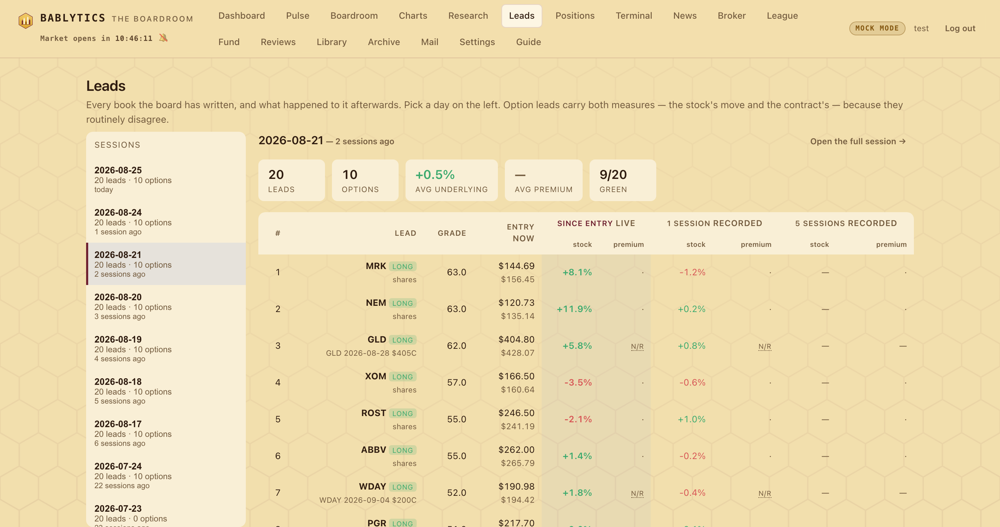

Desk · the record over time
The Leads Desk
Every book the board has ever written, and what happened to it afterwards. Pick a day; see how those twenty leads have performed since — on the stock AND on the contract, which routinely disagree. Two kinds of number are kept deliberately apart: the recorded horizons the model trains on, and a live since-entry mark that moves every day and is never written back.
Every other surface in this app is about today. The dashboard paints the current book, the Pulse re-reads it through the session, the Evening Court scores it once and closes. All of it is correct and none of it answers the question an owner actually asks a week later: what happened to the leads you gave me on Monday?
Until round 40 there was no good answer, because the leads refresh every morning and yesterday's simply scrolled away. The Leads Desk is where they stop scrolling away.
![The Leads Desk with the 2026-08-24 book open: a Sessions rail down the left listing each past session by date with its lead count and how many sessions ago it was, then a summary strip reading twenty leads, ten options, plus 0.3 percent average underlying, plus 7.6 percent average premium and twelve of twenty green, then a wide table with each lead's rank, ticker, direction tag, contract, grade, entry and current price, and three column pairs headed Since entry live, One session recorded and Five sessions recorded, each pair split into stock and premium](assets/screens/leads-desk.png)
Two measures, kept apart on purpose#
The table's three column pairs are not three views of one number. Two of them are history and one of them is now, and confusing the two would quietly corrupt the thing the app learns from.
- 1 session · 5 sessions (recorded)
- Fixed points, read straight out of the outcomes table. Each was measured once, on the day it came due, and is never revised. These are what the outcome model trains on.
- Since entry (live)
- Computed against the latest mark every time you open the page. It moves every day, it answers "where is this now", and it is never written back to the database.
The stock and the contract are different trades#
Half the board's book is expressed through options, and an option lead graded on the share price is graded on the wrong instrument. So every option row carries both measures at every horizon — the underlying's move, and the premium's.
They disagree constantly, and not by small amounts. From the 2026-08-24 book, one session later:
| Lead | The stock did | The contract did |
|---|---|---|
| DIS 2026-08-28 $111C | +0.6% | +68.9% |
| PLTR 2026-08-28 $172.5C | +0.2% | −29.0% |
| WMT 2026-08-28 $106C | −1.8% | −45.3% |
| BA 2026-08-28 $215C | +0.6% | +34.1% |
PLTR is the instructive one. The stock went the way the board said it would — and the lead still lost twenty-nine percent of its premium, because being right by a fifth of a percent does not pay for a week of decay. A page that showed only the left-hand column would have called that a win.
Four ways of having no number#

An empty cell is a claim, and the four claims worth distinguishing are:
- · a middle dot
- A share lead. There was never a premium to report and there is nothing missing.
- N/R not recorded
- A book written before the contract enricher landed. The entry premium was never written down, so no contract return can exist — the app rebuilds the contract's OCC symbol from its strike and expiry so the current mark is at least recoverable, but the return is gone for good. A gap in the record, shown as a gap.
- EXP expired
- The contract has expired or delisted and the feed returns no mark at all.
- — an em dash
- That horizon simply has not arrived yet. A two-day-old book has no five-session column, and it says so rather than implying a flat trade.
The rail, and linking to a day#
The Sessions rail lists every session that produced a book, newest first, each with its lead count and how many trading sessions have passed since. Clicking one opens it; the URL becomes #/leads/<run>, so a particular day survives a reload and can be pasted to someone else. Open the full session in the header hands the same day to the Archive, where the memos, grades and journals for it live.
The desk does not open on today's book by default. Today's leads were entered at today's prices, so every number on the page would be zero by construction — an honest answer to a question nobody asked. It opens on the newest book that has had at least one session to move. Today is still in the rail, one click away.
Why it paints before it finishes#
Pricing a twenty-lead book means marking about thirty symbols, and on a cold cache that measured ten seconds. Rather than show an empty page for ten seconds, the desk fetches twice: the record first, which is already in the database and needs no network at all, and the live marks behind it. The table appears immediately with the recorded horizons filled in and the header reads pricing live… until the marks land. If the feed cannot be reached the header says so plainly, and the recorded columns still stand.